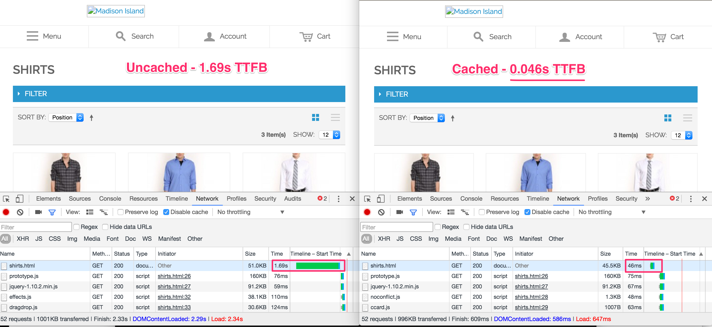

<!doctype html>
<html>
	<head>
		<meta charset="utf-8">
		<meta name="viewport" content="width=device-width, initial-scale=1.0, maximum-scale=1.0, user-scalable=no">

		<title>FPC Hit Rate</title>

		<link rel="stylesheet" href="css/reveal.css">
		<link rel="stylesheet" href="css/theme/simple.css">

		<!-- Theme used for syntax highlighting of code -->
		<link rel="stylesheet" href="lib/css/zenburn.css">

		<!-- Printing and PDF exports -->
		<script>
			var link = document.createElement( 'link' );
			link.rel = 'stylesheet';
			link.type = 'text/css';
			link.href = window.location.search.match( /print-pdf/gi ) ? 'css/print/pdf.css' : 'css/print/paper.css';
			document.getElementsByTagName( 'head' )[0].appendChild( link );
		</script>
	</head>
	<body>
		<div class="reveal">
			<div class="slides">
				<!-- 1. Cover -->
				<section data-markdown>
					<script type="text/template">
						## Monitoring (and improving) your Full Page Cache hit rate
						#### with `Enterprise_PageCache`
					</script>
				</section>
				<!-- 2. Who am I? -->
				<section data-markdown>
					<script type="text/template">
						## Who am I?
						<ul>
						<li class="fragment">Magento Developer with Something Digital (Magento Gold Solution Partner)</li>
						<li class="fragment">Oversee operations and site performance on Rite Aid, fortune 500 company and winner of Imagine 2016 growth award</li>
						<li class="fragment">Passionate about monitoring tools and performance optimization</li>
						<ul>
							<li class="fragment">Contributor to Prometheus time series database project</li>
							<li class="fragment">Researched and published work around optimizing `/catalogsearch/result/index`</li>
						</ul>
						</ul>
					</script>
				</section>
				<!-- 3. Why Does It Matter? -->
				<section>
					<section data-markdown>
						<script type="text/template">
						## Why Does It Matter?
						</script>
					</section>
					<section data-markdown>
						<script type="text/template">
							## Benchmarks
							
							<ul>
								<li>Magento 1.14.1.0</li>
								<li>Sample data</li>
								<li>CentOS VM with 2GB RAM</li>
								<li>Men's shirt's category page</li>
							</ul>
						</script>
					</section>
				</section>
				<!-- 4. How Does It Work? -->
				<section>
					<section data-markdown>
						<script type="text/template">
						## How Does It Work?
						</script>
					</section>
					<section data-markdown>
						<script type="text/template">
						### The moment of truth...
						```php
						// Mage_Core_Mode_App::run()
						if ($this->_cache->processRequest()) {
						    $this->getResponse()->sendResponse();
						} else {
						    $this->_initModules();
						    $this->loadAreaPart(Mage_Core_Model_App_Area::AREA_GLOBAL, Mage_Core_Model_App_Area::PART_EVENTS);

						    if ($this->_config->isLocalConfigLoaded()) {
						        $this->_initCurrentStore($scopeCode, $scopeType);
						        $this->_initRequest();
						        Mage_Core_Model_Resource_Setup::applyAllDataUpdates();
						    }

						    $this->getFrontController()->dispatch();
						}
						return $this;
						```
						</script>
					</section>
					<section data-markdown>
						<script type="text/template">
						### How `Mage_Core_Model_Cache` tries to `processRequest()`
						```php
						// Mage_Core_Model_Cache::processRequest()
						$content = false;
						foreach ($this->_requestProcessors as $processor) {
						    $processor = $this->_getProcessor($processor);
						    if ($processor) {
						        $content = $processor->extractContent($content);
						    }
						}

						if ($content) {
						    Mage::app()->getResponse()->appendBody($content);
						    return true;
						}
						return false;
						```
						</script>
					</section>
					<section data-markdown>
						<script type="text/template">
						### How `Enterprise_PageCache` extracts content...
						```php
						// Enterprise_PageCache_Model_Processor::extractContent()
						$subprocessorClass = $this->getMetadata('cache_subprocessor');
						if (!$subprocessorClass) {
						    return $content;
						}

						$subprocessor = new $subprocessorClass;
						$cacheId = $this->prepareCacheId($subprocessor->getPageIdWithoutApp($this));

						$content = $cacheInstance->load($cacheId);

						if ($content) {
						    $content = $this->_processContent($content);
						}

						return $content;
						```
						</script>
					</section>
					<section data-markdown>
						<script type="text/template">
						### How `Enterprise_PageCache` prepares the `requestCacheId`
						```php
						// Enterprise_PageCache_Model_Processor::_createRequestIds()
						$uri = $this->_getFullPageUrl();

						//Removing get params
						$pieces = explode('?', $uri);
						$uri = array_shift($pieces);

						if (isset($_COOKIE[Mage_Core_Model_Store::COOKIE_NAME])) {
						    $uri = $uri.'_'.$_COOKIE[Mage_Core_Model_Store::COOKIE_NAME];
						}
						if (isset($_COOKIE['currency'])) {
						    $uri = $uri.'_'.$_COOKIE['currency'];
						}
						if (isset($_COOKIE[Enterprise_PageCache_Model_Cookie::COOKIE_CUSTOMER_GROUP])) {
						    $uri .= '_' . $_COOKIE[Enterprise_PageCache_Model_Cookie::COOKIE_CUSTOMER_GROUP];
						}
						if (isset($_COOKIE[Enterprise_PageCache_Model_Cookie::COOKIE_CUSTOMER_LOGGED_IN])) {
						    $uri .= '_' . $_COOKIE[Enterprise_PageCache_Model_Cookie::COOKIE_CUSTOMER_LOGGED_IN];
						}
						if (isset($_COOKIE[Enterprise_PageCache_Model_Cookie::CUSTOMER_SEGMENT_IDS])) {
						    $uri .= '_' . $_COOKIE[Enterprise_PageCache_Model_Cookie::CUSTOMER_SEGMENT_IDS];
						}
						if (isset($_COOKIE[Enterprise_PageCache_Model_Cookie::IS_USER_ALLOWED_SAVE_COOKIE])) {
						    $uri .= '_' . $_COOKIE[Enterprise_PageCache_Model_Cookie::IS_USER_ALLOWED_SAVE_COOKIE];
						}
						if (Enterprise_PageCache_Helper_Data::isSSL()) {
						    $uri .= '_ssl';
						}
						$designPackage = $this->_getDesignPackage();

						if ($designPackage) {
						    $uri .= '_' . $designPackage;
						}

						$this->_requestId = $uri;
						$this->_requestCacheId = $this->prepareCacheId($this->_requestId);
						```
						</script>
					</section>
					<section data-markdown>
						<script type="text/template">
						### The subprocessor gets a say too!
						```php
						// Enterprise_PageCache_Model_Processor_Default::getPageIdWithoutApp()
						$queryParams = $_GET;
						ksort($queryParams);
						$queryParamsHash = md5(serialize($queryParams));
						return $processor->getRequestId() . '_' . $queryParamsHash;
						```
						</script>
					</section>
					<section data-markdown>
						<script type="text/template">
						### The second moment of truth...(full hit or partial hit)
						```php
						// Enterprise_PageCache_Model_Processor_Default::_processContent()
						$containers = $this->_processContainers($content);
						$isProcessed = empty($containers);

						if ($isProcessed) {
						    return $content;
						} else {
						    Mage::register('cached_page_content', $content);
						    Mage::register('cached_page_containers', $containers);
						    Mage::app()->getRequest()
						        ->setModuleName('pagecache')
						        ->setControllerName('request')
						        ->setActionName('process')
						        ->isStraight(true);

						    // restore original routing info
						    $routingInfo = array(
						        'aliases'              => $this->getMetadata('routing_aliases'),
						        'requested_route'      => $this->getMetadata('routing_requested_route'),
						        'requested_controller' => $this->getMetadata('routing_requested_controller'),
						        'requested_action'     => $this->getMetadata('routing_requested_action')
						    );

						    Mage::app()->getRequest()->setRoutingInfo($routingInfo);
						    return false;
						}
						```
						</script>
					</section>
					<section data-markdown>
						<script type="text/template">
						### What process containers does...
						```php
						// Enterprise_PageCache_Model_Processor_Default::_processContainers()
						$placeholders = array();
						preg_match_all(
						    Enterprise_PageCache_Model_Container_Placeholder::HTML_NAME_PATTERN,
						    $content, $placeholders, PREG_PATTERN_ORDER
						);

						$placeholders = array_unique($placeholders[1]);
						foreach ($placeholders as $definition) {
						    $placeholder = new Enterprise_PageCache_Model_Container_Placeholder($definition);
						    $container = $placeholder->getContainerClass();
						    if (!$container) {
						        continue;
						    }

						    $container = new $container($placeholder);
						    $container->setProcessor($this);

						    if (!$container->applyWithoutApp($content)) {
						        $containers[] = $container;
						    } else {
						        preg_match($placeholder->getPattern(), $content, $matches);
						        if (array_key_exists(1,$matches)) {
						            $containers = array_merge($this->_processContainers($matches[1]), $containers);
						            $content = preg_replace($placeholder->getPattern(), str_replace('$', '\\$', $matches[1]), $content);
						        }
						    }
						}
						return $containers;
						```
						</script>
					</section>
					<section data-markdown>
						<script type="text/template">
						### Loading the containers...
						```php
						// Enterprise_PageCache_Model_Container_Abstract::applyWithoutApp()
						$cacheId = $this->_getCacheId();

						if ($cacheId === false) {
						    $this->_applyToContent($content, '');
						    return true;
						}

						$block = $this->_loadCache($cacheId);
						if ($block === false) {
						    return false;
						}

						$block = Enterprise_PageCache_Helper_Url::replaceUenc($block);
						$this->_applyToContent($content, $block);
						return true;
						```
						</script>
					</section>
					<section data-markdown>
						<script type="text/template">
						### Getting the cache id
						```php
						// Enterprise_PageCache_Model_Container_Welcome::_getCacheId()
						return 'CONTAINER_WELCOME_' . md5($this->_placeholder->getAttribute('cache_id') . $this->_getIdentifier());

						// Enterprise_PageCache_Model_Container_Welcome::_getIdentifier()
						$cacheId = $this->_getCookieValue(Enterprise_PageCache_Model_Cookie::COOKIE_CUSTOMER, '')
						    . '_'
						    . $this->_getCookieValue(Enterprise_PageCache_Model_Cookie::COOKIE_CUSTOMER_LOGGED_IN, '')
						    . '_'
						    . $this->_getCookieValue(Enterprise_PageCache_Model_Cookie::PERSISTENT_COOKIE_NAME, '');
						return $cacheId;
						```
						</script>
					</section>
				</section>
			</div>
		</div>

		<script src="lib/js/head.min.js"></script>
		<script src="js/reveal.js"></script>

		<script>
			// More info https://github.com/hakimel/reveal.js#configuration
			Reveal.initialize({
				history: true,

				// More info https://github.com/hakimel/reveal.js#dependencies
				dependencies: [
					{ src: 'plugin/markdown/marked.js' },
					{ src: 'plugin/markdown/markdown.js' },
					{ src: 'plugin/notes/notes.js', async: true },
					{ src: 'plugin/highlight/highlight.js', async: true, callback: function() { hljs.initHighlightingOnLoad(); } }
				]
			});
		</script>
	</body>
</html>
